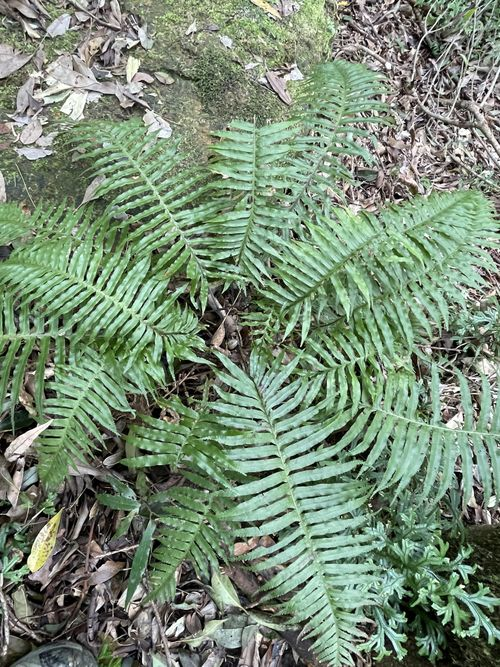

Plagiogyriaceae
(No common name; often Plagiogyria Family)
Plagiogyriaceae is a small family of terrestrial ferns in the order Cyatheales, containing the single genus Plagiogyria. These ferns are notable for their stout, erect or ascending rhizomes, dimorphic fronds, and a distinct lack of scales or hairs on mature plants. They possess unique paired structures (pneumatophores) at the base of the stipes and have an acrostichoid arrangement of sporangia on the fertile fronds. The family has a disjunct distribution across Asia and the Neotropics.
Overview
Plagiogyriaceae, comprising solely the genus Plagiogyria, represents another early diverging lineage within the Cyatheales order. These ferns are typically found in moist, shaded montane forests, often near streams or on steep banks. They grow from stout, non-creeping rhizomes that are erect or ascending, sometimes forming short trunks.
A key characteristic setting Plagiogyriaceae apart from most other Cyatheales families is the complete lack of scales and hairs on the rhizomes, stipes, and fronds of mature plants (young fiddleheads may have some glandular hairs or mucilage). Instead of indument, they possess distinctive paired, ear-like or knob-like pneumatophores (aerophores) at the base of the stipes, believed to function in gas exchange.
The fronds are dimorphic: sterile fronds are pinnately compound (rarely simple) with flattened, photosynthetic pinnae, while fertile fronds, often taller and more erect, have much narrower, linear pinnae whose undersides are entirely covered in sporangia (acrostichoid condition). There are no discrete sori or indusia. The family has a wide but disjunct distribution, occurring in East and Southeast Asia, Malesia, New Guinea, and separately in the Neotropics (Mexico to South America).
Quick Facts
- Scientific Name: Plagiogyriaceae
- Common Name: No widely accepted common name; Plagiogyria Family.
- Number of Genera: 1 (Plagiogyria)
- Number of Species: Approximately 10-15
- Distribution: Disjunct: E/SE Asia, Malesia, New Guinea; Neotropics.
- Key Features: Terrestrial, stout erect/ascending rhizome, lacks scales/hairs, dimorphic fronds, paired pneumatophores at stipe base, acrostichoid sporangia (no sori/indusia), homosporous.
- Evolutionary Group: Polypodiopsida (Leptosporangiate Ferns) - Cyatheales
Key Characteristics
Growth Form and Habit
Terrestrial ferns with stout, erect or ascending rhizomes, sometimes forming short, thick trunks up to 1 meter tall.
Fronds (Leaves)
Fronds arise in a terminal cluster or rosette from the rhizome apex. They are distinctly dimorphic.
- Sterile Fronds: Pinnately compound (rarely simple or bipinnate), with lanceolate to oblong pinnae that are often serrated near the apex. Texture is typically herbaceous to somewhat leathery.
- Fertile Fronds: Also pinnate, but with much narrower, linear pinnae. Often taller and more erect than sterile fronds. The abaxial (lower) surface is entirely covered by sporangia when mature.
- Vernation: Young fronds show circinate vernation.
Indument
Mature plants are characteristically glabrous (lacking scales and hairs) on rhizomes, stipes, and laminae. Young croziers (fiddleheads) may be covered in mucilage or possess small, glandular hairs that are shed as the frond expands.
Pneumatophores (Aerophores)
A distinctive feature is the presence of paired, swollen, ear-like or knob-like structures at the very base of the petiole (stipe), particularly prominent on sterile fronds. These are pneumatophores (or aerophores) and are thought to facilitate gas exchange for the buried or densely packed rhizome/stipe bases.
Sporangia Arrangement
Plagiogyriaceae are homosporous. Sporangia are not organized into discrete sori.
- Arrangement: Sporangia are acrostichoid, meaning they densely cover the entire abaxial (lower) surface of the contracted fertile pinnae, following the veins.
- Indusium: There is no indusium (exindusiate). The sporangia are exposed once mature.
- Paraphyses: Paraphyses (sterile hairs sometimes found amongst sporangia) are typically absent.
Spores
Spores are trilete, tetrahedral, and typically yellowish or brownish, with varied surface ornamentation (often tuberculate or somewhat ridged).
Field Identification
Identifying Plagiogyriaceae relies on recognizing the unique combination of dimorphic fronds, lack of scales/hairs, and the presence of pneumatophores at the stipe base.
Primary Identification Features
- Lack of Indument: Mature rhizomes, stipes, and fronds are smooth, without scales or persistent hairs.
- Pneumatophores: Look for the paired, swollen 'ears' or knobs right at the base where the stipe joins the rhizome (best seen on sterile fronds).
- Dimorphic Fronds: Observe both sterile fronds with broader, leafy pinnae and fertile fronds with very narrow, linear pinnae.
- Acrostichoid Sporangia: Underside of fertile pinnae entirely covered in brown sporangia (no discrete sori).
- Habit: Stout, erect/ascending rhizome or short trunk.
Common Confusion Points
- Blechnaceae (e.g., Blechnum, Struthiopteris): Some species have dimorphic fronds. However, Blechnaceae typically have scales and/or hairs, and their sporangia are in distinct linear sori parallel to the costa, usually covered by an indusium (not acrostichoid). They lack pneumatophores at the stipe base.
- Osmundaceae (e.g., Osmunda, Osmundastrum): Can have dimorphic fronds or portions of fronds. However, they usually have some hairs/scales, lack pneumatophores, and have much larger, distinct sporangia not typical of leptosporangiate ferns, often clustered on non-laminate fertile segments.
- Other ferns with pinnate fronds: Most other ferns with similar frond dissection will possess scales or hairs and have their sporangia arranged in discrete sori, often with indusia.
Field Guide Quick Reference
Look For (Plagiogyria):
- Stout erect/ascending rhizome
- No scales or hairs (mature parts)
- Paired pneumatophores at stipe base
- Dimorphic fronds (sterile leafy vs. fertile narrow)
- Fertile underside covered in sporangia (acrostichoid)
- Habitat moist montane forests
Distinguish From:
- Blechnaceae (scales/hairs, linear sori)
- Osmundaceae (different sporangia)
- Most other ferns (scales/hairs, discrete sori)
Notable Examples
The family contains only the genus Plagiogyria.

Plagiogyria
(No common name)
The sole genus, with species distributed across Asia and the Neotropics. Characterized by the lack of scales/hairs, presence of basal pneumatophores, dimorphic fronds, and acrostichoid sporangia. Species like P. adnata, P. euphlebia (Asia), and P. semicordata (Neotropics) exemplify the genus.
Phylogeny and Classification
Plagiogyriaceae is classified within the order Cyatheales. It represents one of the early diverging lineages within the order, distinct from the core tree fern families. Its phylogenetic position relative to other early branches like Culcitaceae, Loxsomataceae, and Thyrsopteridaceae is an area of ongoing research, but it clearly constitutes a separate, ancient lineage.
The unique combination of morphological features (absence of indument, presence of pneumatophores, acrostichoid sporangia) supports its distinct family status. Its disjunct distribution across Asia and the Americas points to a long evolutionary history, likely involving past connections or dispersal events between these now widely separated regions.
Position in Plant Phylogeny
- Kingdom: Plantae
- Clade: Tracheophytes (Vascular plants)
- Class: Polypodiopsida (Leptosporangiate ferns)
- Order: Cyatheales
- Family: Plagiogyriaceae
Evolutionary Significance
Plagiogyriaceae is important for:
- Phylogenetic Insights: Helps resolve the deep branching patterns within the Cyatheales order.
- Morphological Diversity: Demonstrates unique adaptations like pneumatophores and the loss of typical fern indument (scales/hairs).
- Biogeography: Its Asia-Neotropics disjunction is a classic pattern requiring explanation through historical geology and dispersal.